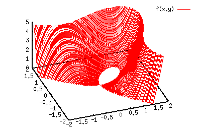
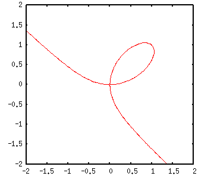
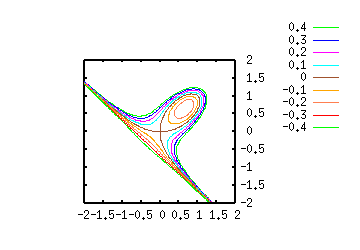

- not so Frequently Asked Questions -
update 2005/11/19
|
|
- not so Frequently Asked Questions - update 2005/11/19
|
To solve implicit functionsA functon which is not defined in a form of y=f(x) but written as f(x)+g(y)=0 cannot be defined in gnuplot. To draw such an implcit function, we have to use a parametric representation, or the function is once defined as a 3-D surface, and find an intersection curve with z=0 plane. If the function can be defined by using parameters, it is easy to make a figure. For example, an equation for circle, x*x+y*y=r*r, is re-defined by x=r*sin(t) and y=r*cos(t). In gnuplot:
gnuplot> set parametric
dummy variable is t for curves, u/v for surfaces
gnuplot> set size square
gnuplot> r=1
gnuplot> plot r*sin(t),r*cos(t)
When the function is so complicated, and use of parameter is difficult, we define the function as a 3-D surface. The next example is for x^3-2xy + y^3=0 . gnuplot> f(x,y)= x**3 - 2*x*y + y**3 An intersection of f(x,y) and z=0 is the solution. To set the z=0 plane at the bottom of 3-D plot, we use set ticslevel 0 . gnuplot> set xrange [-2:2] gnuplot> set yrange [-2:2] gnuplot> set zrange [0:5] gnuplot> set ticslevel 0 gnuplot> set view 40,340 gnuplot> set isosample 100,100 gnuplot> splot f(x,y) 
The curve shown at the bottom is the solution of f(x,y)=0. The contour lines give us the values of this curve, which are written on a file. gnuplot> set xrange [-2:2] gnuplot> set yrange [-2:2] gnuplot> set zrange [*:*] gnuplot> set cont base gnuplot> set cntrparam levels discrete 0,0 gnuplot> unset surface gnuplot> set surface gnuplot> set term table gnuplot> set output "cont.dat" gnuplot> splot f(x,y) Then, the data on the file are plotted, in a usual manner. gnuplot> set xrange [-2:2] gnuplot> set yrange [-2:2] gnuplot> set size square gnuplot> plot "cont.dat" w l 
The following method does not use a temporary file. The contour lines are shown at -0.4 with an increment of 0.1, and each line corresponds to a solution of x^3-2xy + y^3=const. gnuplot> set xrange [-2:2] gnuplot> set yrange [-2:2] gnuplot> set view 0,0 gnuplot> set isosample 100,100 gnuplot> set size square gnuplot> set cont base gnuplot> set cntrparam levels incre -0.4,0.1,0.4 gnuplot> unset surface gnuplot> splot f(x,y) 
 |